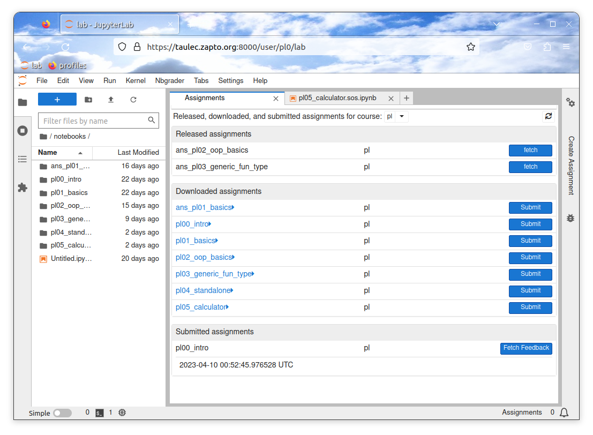
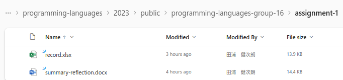
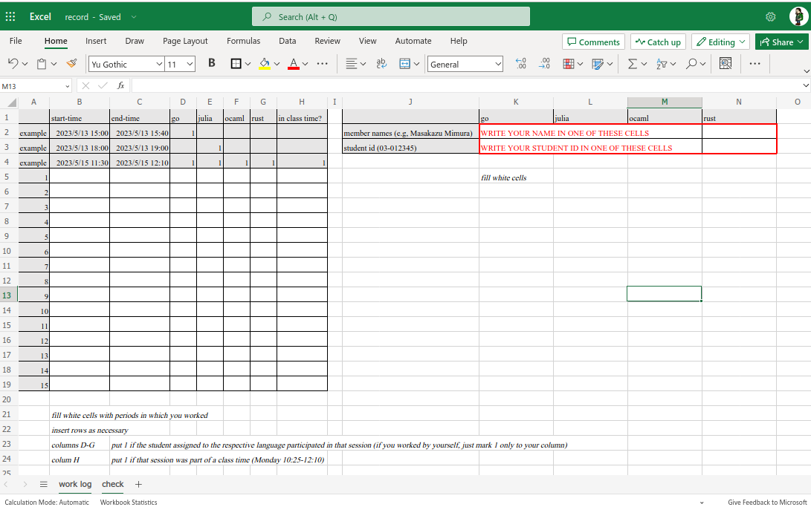
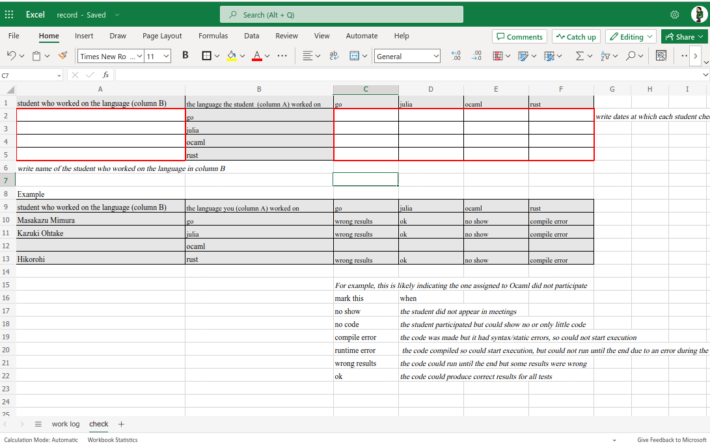
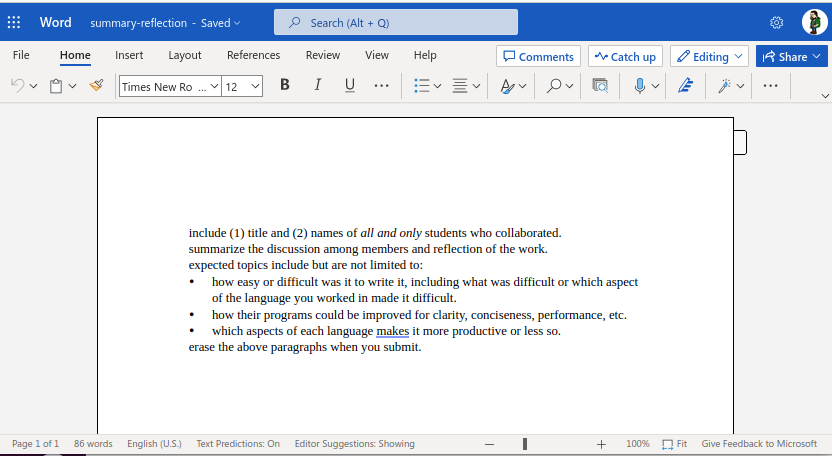

You collaborate with team members. Here are responsibilities of you and your group.
Each member submits your calculator program through Jupyter by pressing the "Submit" button of pl05_calculator. Make sure you have your source code in the specified directory with the specified names, so I can automatically check them (i.e., do not roll your own file names).

Other materials should be submitted by editing collaborative documents (Microsoft Excel/Word) I give to each group. A folder named programming-languages-group-NN should appear in your OneDrive page's "Shared" folder on the left pane, where NN is your group number. The folder contains a child directory assignment-1, which contains two files record.xlsx and summary-reflection.docx

To see these files, you have to sign in Microsoft 365 with UTokyo Account (see this page if you don't know how).
To indicate you are able to access these files, please write your name and student id in work log sheet in record.xlsx immediately.

A group has to compile records of when each member worked, both individually or with other members into work log sheet in record.xlsx.
A group has to gather and have meetings a few times. They can/should also include meetings in classes (if and only if the group indeed met during a class).
In the end, each member has to show other members your source code and if it works (compile and run it before other members). All members must see how far others went and honestly report what they saw in the check sheet in record.xlsx.

You should select from the following.
(The main part) In the meeting(s), exchange and discuss, among others, following topics

After you have done, each member should send a brief notice to the assignment 1 in ITC-LMS saying something like "we have done all the work specified" and optionally some nice greetings or remarks.